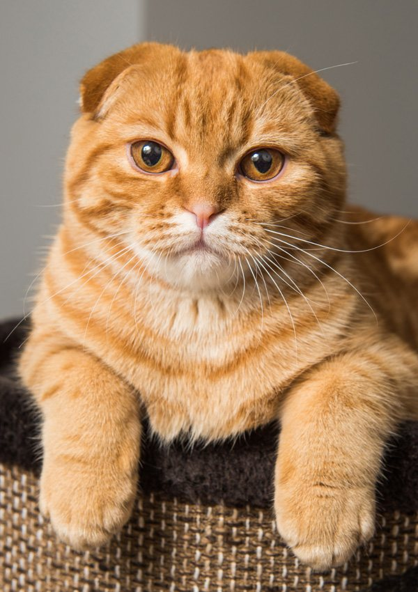

Моя кошка - Боня

Моя кошка
ᓚᘏᗢ - животное достаточно необычное. Это может заключатся в следующих чертах:
- обажает лежать на подоконники (греться на солнышке), но если она может забраться на поддоконник - приходится
брать ее на руки, а это ей не нравится и она постоянно кричит, то есть делаешь для нее хорошо, а она не давольна;
- не любит чужих людей и проявляет это в виде:
- плевков;
- шипения;
- махания лапами;
- демонстративного ухода из комнаты и др.
- когда очень холодно лезет под едеяло либо ложится рядом и спит;
- не любит когда кто-то храпит, за это она бьёт лапой по губам, после чего на губе или выше всегда есть царапина;
- ну и другие черты ей присущи.
Любимыми лакомствами кошки являются рыбные колечки